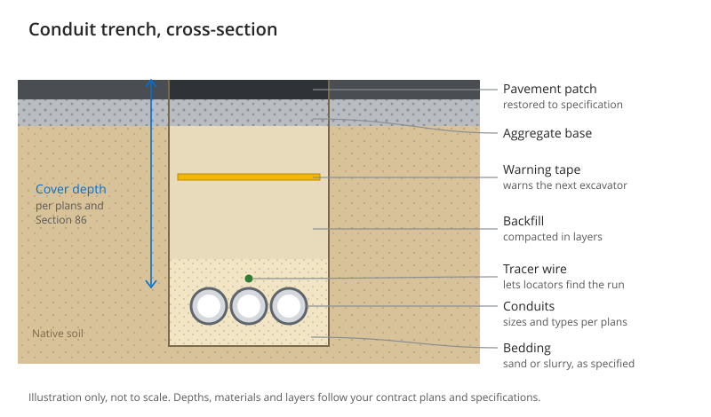

Phase 2: Underground construction
In one sentence: phase 2 builds the empty pathway every future system will use, and it is where most surprises are found.
What happens

- Survey and staking: mark pull boxes, poles, cabinets and conduit routes from the plans.
- Utility locates: call the one-call center before digging, and wait for marks.
- Potholing: expose existing utilities where the route crosses or runs close to them. Confirm depth and owner. If a conflict appears, stop and write an RFI; it may become a change order. See Change orders and potholing findings.
- Trenching or directional boring: install conduit, innerduct and any ground or tracer wire. See Trenching vs. directional boring and Conduit: types, sizes and fittings.
- Backfill and restoration to the specification, then patch paving.
PM focus

- Lane closures booked and traffic control set up as approved.
- Water pollution control BMPs in place before digging.
- Daily reports that record what was found, especially utility conflicts and delays. See Daily reports and documentation.
- Conduit proven clear (mandrel or swab) before it is covered when the contract requires it.
At the end of this phase, the pathway exists but nothing is in it.
Common mistakes / what Caltrans actually checks
- Digging before locates are complete.
- Moving a route around a utility without an approved RFI.
- Not recording delays from unmarked utilities in the daily report.
- Covering conduit that was never proven clear.